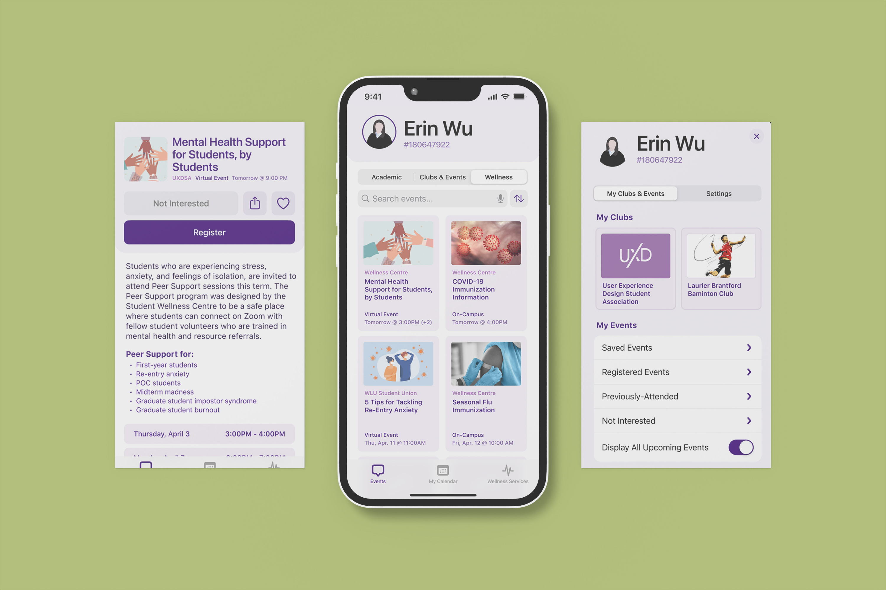
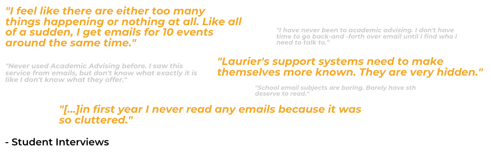
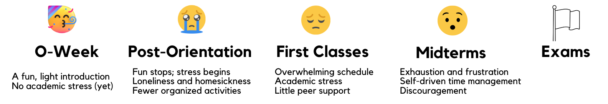
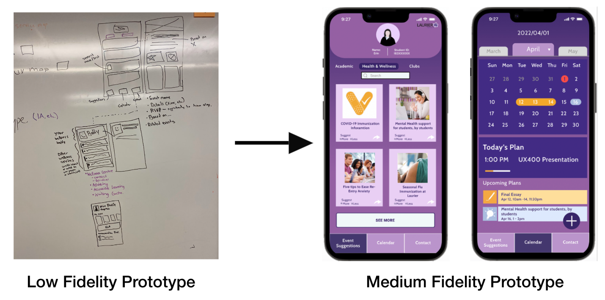
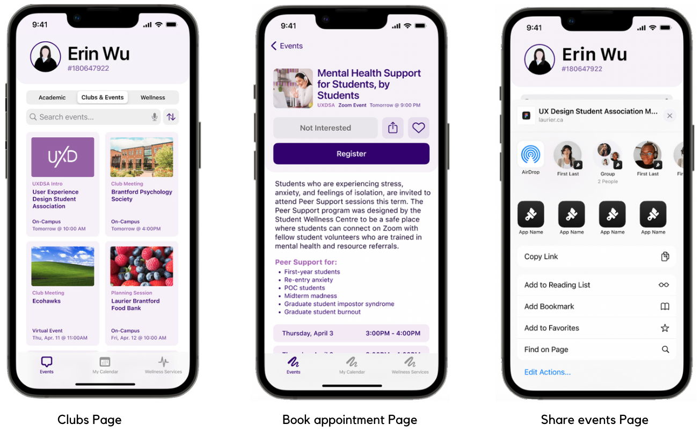

Living Golden App
| Timeline |
Teams |
Clients |
My Role |
| Starts: February 5, 2022 |
Julia Huynh |
Unless Design |
UX designer |
| Ends: April 1, 2022 |
Mikayla Ferraro |
|
UX researcher |
|
Nithin Paul |
|
Noah Lach |
|
Yufei Zhao (me) |

Overview
Wilfrid Laurier students experience a disconnect of information on campus. The current communication process for students typically results in vast amounts of emails that cause information overload for students and ultimately, the critical information students need gets lost or is not easily accessible in important moments.
Throughout the course of an academic year students experience various emotions that directly relate to critical moments on campus such as O-week or Midterms. Within these moments students need to have access to quick and reliable information to provide support in these critical moments.
Problem Statement
Laurier’s Student Wellness efforts have a communication problem. While the school offers a wide variety of support services, many students are unaware or uninformed, and unable to take full advantage of this support network when they need it most. How might we effectively and promptly communicate mental health resources at these critical moments for students?
Research
Secondary Research
Our group researched what current wellness services do Laurier have, and then went through the research report that our client Unless Design provided.
Primary Research
We observed services that Laurier students used most often, and where do students usually get school information from.
Meta-Analysis
Combined the research we conducted with the secondary research that provided by our client Unless Design.
Key Insights:
- Laurier’s communications paths are out of sync with students’
- Wellness services act as a safety net, not a proactive measure
- Fragmented systems create a fractured experience
- Laurier’s website is overstuffed and lacking clarity

Interviews
- Gauge the efficacy of Laurier’s communications
- Identify crucial moments for student support
- Understand students’ communication channels
- Competitive analysis
- 10 students from Laurier
- 5 students from other universities including UofT, McMaster, and Conestoga
Findings:
- Many schools face similar issues
- Laurier events are poorly promoted
- Student communications are often irrelevant
- Finding clubs requires too much work
- Students lack time to seek support
- Wellness Center website is held back by poor IA
Ideation
Journey Map

After created the journey map, we got the idea of designing a digital app:
- uses machine learning to provide students with targeted recommendations for campus events and initiatives
- Quick access to Wellness and Academic support on campus
- A centralized location for students to find resources, register for events, and track and organize plans over the semester
Prototype

User Testing
To verify the prototype is useable and easy to follow for incoming students during periods of stress, our group conducted an A/B test: test 5 users on the Laurier website, and 5 users on our medium-fidelity prototype. We asked users to use synchronous think-aloud protocol during the test.
Findings and Changes:
- Improved language terms
- Increased emphasis on social events
- Improved IA of clubs and associations
- Increased information density
Solution

Living Golden App:
- Tailored recommendations for on-campus events.
- One place for every event.
- Built-in social features.
- Integrated into student’s lives and schedules.
- Quick access to wellness services.
- Proactive promotion.
- Accessibility.
Implementation
This solution’s practicality can be implemented in the next fall semester (Fall 2022). A few steps that still need to be completed are outlined below:
Before the application is built (Spring 2022):
- contact Laurier Wellness Centre, Student Union, and other Laurier services to make sure they post their events and clubs in our application
- do a user test with the university before the application is published to ensure a smooth experience from the university side.
After the application is built (Spring 2022):
- make posters and QR codes of the application, and post them in school buildings and classrooms
- recommend this application through email before school starts
- mentioned the application on the residence survey that is filled out in June
- have mentors and dons suggest the application to students during O-Week.
Portfolio
Other UX Projects